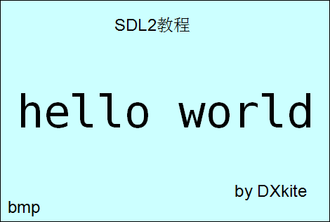
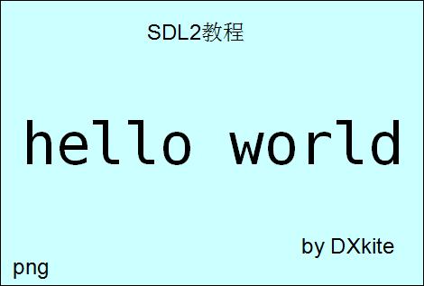

本课，我们来加载图片，首先在工作目录准备两张图片,一张是BMP格式图片，一张是比较常见的PNG图片
我们现在加载BMP格式的图片，拿出第一课我们写的源代码，添加文件加载部分，在此之前，先添加一个全局变量Suface用来储存加载的图片
 hello.bmp |
 hello.png |
// 图片表面 SDL_Surface *Surface = NULL;
然后接着来写加载图片部分：
int LoadSurface()
{
//加载图片 BMP格式
Surface = SDL_LoadBMP("hello.bmp");
if (Surface == NULL)
return -1;
return 0;
}
这里用到了函数SDL_LoadBMP这个函数接受一个路径参数,只能加载BMP格式的图片，返回一个SDL_Surface的指针，如果我们要加载所有格式的图片，那么看看另一份代码文件：
int LoadSurface()
{
//加载图片
Surface = IMG_Load("hello.png");
if (Surface == NULL)
return -1;
return 0;
}
这是另一份代码加载图片的部分，这里可以加载所有格式的图片，不过在使用IMG_Load函数之前，需要包含SDL_image.h 头文件
再来看看在主函数中如何把Surface应用到上节课绑定了窗口的表面WindowScreen上
//粘贴表面 SDL_BlitScaled(Surface, NULL, WindowScreen, NULL);
函数SDL_BlitScaled接受四个参数，第一个参数是源表面，第三个参数是目的表面，函数的作用是将源表面绘制到目的表面上，第二个参数指定了源表面绘制到目的表面的区域，接受一个SDL_Rect指针，第四个参数指定了源表面绘制到目的表面的区域，同样接受一个SDL_Rect的指针，在此，两个设置为NULL表示默认全部都绘制和绘制目的表面的全部区域，刷新表面后，看效果：
hello.bmp 加载截图 |
hello.png 加载截图 |
接下来我们来应用一下两个被我们设置为NULL的矩形参数，如下左边的图片，我们只需要左上方的黄色安卓机器人怎么办？使用函数SDL_BlitScaled的第二个矩形参数，先用Windows画图之类的函数确定其所在区域，在声明一个矩形参数，再绘制，定义矩形参数的时候我用的是列表初始化，初始化的SDL_Rect的成员分别是x,y,w,h;左上顶点位置（x,y),和矩形宽（width）高 （height）
//剪切
SDL_Rect clip =
{
0, 0, 200, 120
};
//粘贴表面
SDL_BlitScaled(Surface, &clip, WindowScreen,NULL);
 clip.png |
代码运行效果图 |
图片是贴上去了，不过可以明显看到图像有拉伸的情况，那怎么办？有两个解决方案：
1.使用最后那个参数：
//绘制位置
SDL_Rect pos =
{
50, 50, 200, 120
};
//粘贴表面
SDL_BlitScaled(Surface, &clip, WindowScreen, &pos);
2.使用函数SDL_BlitSurface：
//绘制位置
SDL_Rect pos =
{
50, 50, 0, 0
};
//粘贴表面
SDL_BlitSurface(Surface, &clip, WindowScreen, &pos);
//更新窗口
SDL_UpdateWindowSurface(Window);
可以看到，使用SDL_BlitSurface函数时，pos的w,h都被我设置为0了，可是这两个方案运行结果是一致的，因为SDL_BlitSurface会忽略最后一个参数的宽和高，运行后如下图：